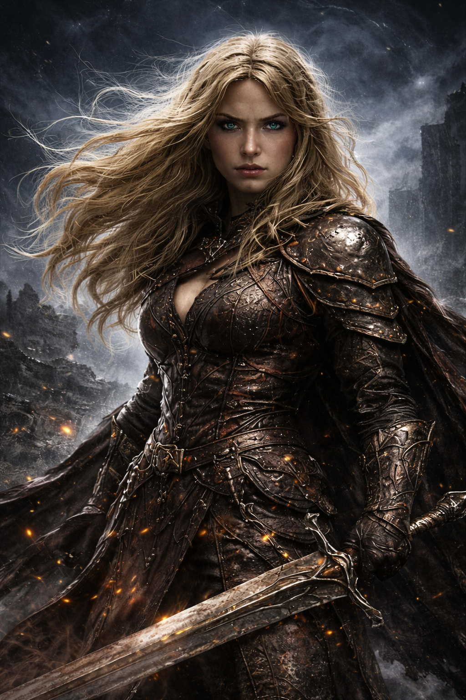
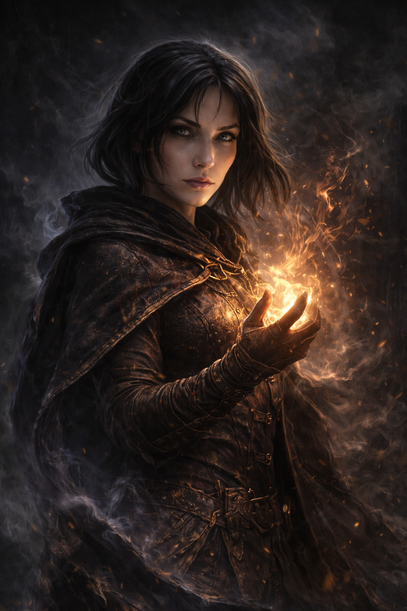
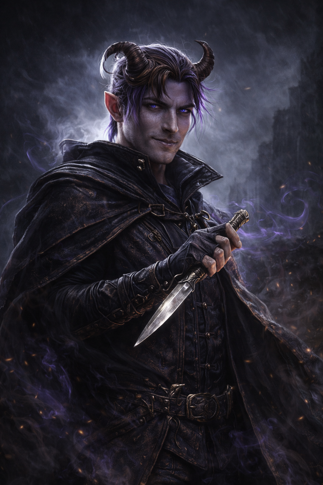
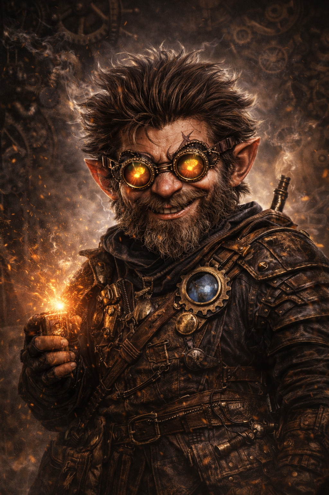
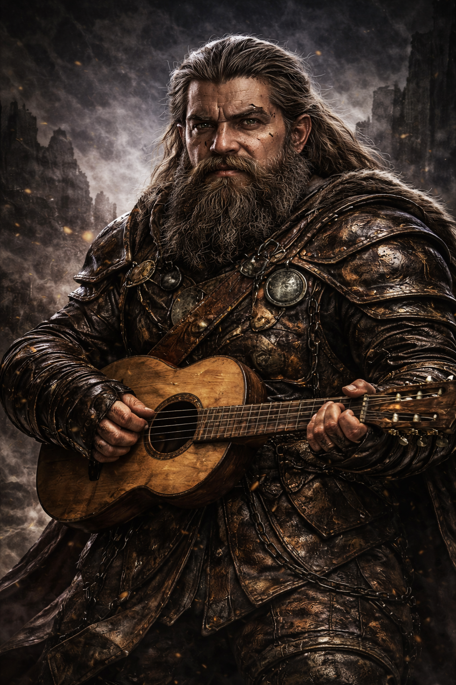

Zwischen Nebel, Schicksal und einer bedenklichen Zahl schlechter Entscheidungen sammeln die Excellants ihre Legenden, Narben und Triumphe.

Sie nannten sie den Marsch der Stürme.
Zu wenige erinnern sich an den Namen des Waldes, in dem sie geboren wurde - ein Ort, der nicht auf Karten verzeichnet ist, verborgen jenseits des Vorhangs der Zeit. Es war nicht der sanfte, von Sonnenlicht getränkte Wald der vergangenen Elben, wo Harmonie blühte und Lieder wie klares Wasser flossen. Dies war etwas älter. Schärfer. Ein Ort, wo selbst der Wind Narben trug.
Der Wald hatte in seiner Sprache keine Namen - nur Verben. Zerreißen. Biegen. Ausdauern.
Ihr Volk lebte dort, nicht in Harmonie mit der Natur, sondern im Rechnen mit ihr. Sie wussten, dass Gleichgewicht nicht brüchiges Glas ist - sondern Stahl, poliert von Sturm und Frost und der unaufhaltsamen Passage der Jahreszeiten. Sie wussten, dass Licht nur bedeutend ist, wenn er gegen Schatten gemessen wird.
Und Thalindra war Schatten, zu Fleisch geworden.
Während andere elbische Kinder lernten zu meditieren, zu singen, zu lauschen - lernte sie Bewegung. Sie lernte das Geräusch, wie eine Klinge gezogen wird, das Gewicht der Luft vor einem Schlag. Während andere zu den Bäumen flüsterten, stritt sie mit ihnen. Nicht in Worten, sondern in Bewegung - sprang über Wurzeln, huschte zwischen Ästen hindurch, ließ ihre Füße die Fragen beantworten, die ihr Herz noch nicht formulieren konnte.
Aber sie bewegte sich nicht einfach.
Sie stromte.
Unter ihrer Haut war immer etwas unruhig, wie Donner, der zu lange hinter einer Wand aus Wolken verweilt. Ihr Lachen kam zu schnell. Ihre Stille dauerte zu lang. Ihre Augen sahen nichts - und erinnerten sich an alles.
Als der Überfall begann, sah niemand ihn kommen.
Kein Horn tönte. Kein Späher kehrte zurück.
Nur der Geruch von Rauch, getragen von einem Wind, der nicht dorthin wehen sollte.
Sie war zwölf, nach der elbischen Rechnung - oder vielleicht dreizehn. Die Zeit trug noch eine Maske in jenen Tagen. Sie erinnerte sich, wie sie draußen trat, bloße Füße auf kaltem Stein, Rauch bereits über dem Türrahmen wie eine zu späte Warndung.
Dann Stille.
Nichtfrieden. Nichtrast.
Die Stille, die hält, bevor der Schrei.
Die Tür öffnete sich, bevor sie entscheiden konnte, ob sie hinein oder fliehen sollte.
Drinnen - das Feuer tanzte bereits.
Es sprang über Balken wie eine lebende Sache mit Namen und Hunger. Es flackerte nicht. Es rückte vor. Und jenseits der Flammen sah sie sie: Gestalten in Häuten und Rost verpackt, Gesichter nicht von Zeit, sondern von Entscheidung genarbt, Klingen tragend, die schon zu viel getrunken hatten.
Sie fragte nicht nach dem Warum.
Sie wog keine Risiken ab.
Sie bewegte sich einfach.
Nicht als Kriegerin - niemals das.
Als Sturm.
Es gibt einen Unterschied.
Ein Krieger spricht von Taktik und Ehre, von Feinden und Siegen.
Ein Sturm spricht nur von Kraft.
Ihr Schlag war plötzlich. Unvorhersehbar. Ungerecht.
Sie bewegte sich zwischen Schatten und Flammen, und wo sie verging, schien die Luft selbst zu dünnen, sich zu verdrehen, Widerstand zu leisten. Ihre Feinde fielen nicht leicht. Sie fielen nicht mal.
Sie verschwanden - verzehrt, verstreut, zerrissen von etwas, das sie nicht nennen, vermeiden, überleben konnten.
Das Feuer setzte seinen Vormarsch fort.
So tat sie es.
Es gab keinen Schlachtenschrei.
Keinen triumphalen Ruf.
Nur eine Stille so tief, so absolut, dass sie zu eigenem Klang wurde - wie die Pause zwischen Herzschlägen, bis zu einem unerträglichen Längen.
Als sie endlich brach, war es, weil der letzte Eindringling verschwunden war - entweder in die Nacht, oder in etwas tieferes. Die Dorfbewohner lebten noch. Aber der Wald war nicht mehr derselbe.
Sie auch nicht.
Später sprachen die Überlebenden mit gleichem Gewicht von zwei Dingen: Dankbarkeit und Angst.
Dankbarkeit, weil sie sie gerettet hatte.
Angst, weil sie sich verändert hatte.
Sie hatte den Sturm des Tages nicht kontrolliert.
Der Sturm hatte durch sie gesprochen.
Ihre Wut hatte keinen Namen. Keine Form. Nur Macht, roh, schrecklich und unbestreitbar ihr.
Und der schlimmste Teil?
Der schlimmste Teil war nicht das Feuer.
Nicht der Verlust.
Nicht einmal die Stille, die folgte.
Es war die Art, wie ihr eigener Spiegel nun zurückblickte - anders.
Schärfer.
Kälter.
Wie etwas, das geweckt worden war.
Also ging sie.
Nicht in Scham.
In Verständnis.
Es gibt keine Ehre in gefürchtet zu werden.
Es gibt nur Wahrheit in kenntlich zu sein.
Sie ward allein. Nicht als Flüchtling. Nicht als Überlebende.
Als Frage.
Würde sie gejagt werden?
Würde sie verehrt werden?
Würde sie verstanden werden?
Die Antwort, die sie bald lernte, war immer dieselbe.
Die Welt versteht keine Stürme.
Sie kennt nur ihre Folgen.
Doch tief in ihren Knochen, wo sogar die Erinnerung vergisst, wusste sie die Wahrheit:
Sie war nicht zerbrochen.
Sie war nicht verflucht.
Sie war einfach... echt.
Und in einer Welt, die Anmut und Stille und Gleichgewicht verlangte - war etwas schrecklich, schön und überaus notwendig daran, erlaubt zu sein zu brüllen.

Sie sagen, die Hafenstadt schläft nie.
Sie lügen.
Brennfurt schläft nicht.
Es beobachtet.
Mit hundert Augen, gestreut über Fenster, Gassen undrostigen Scharniere. Mit hundert Flüstern, getragen von feuchten Winden und gestohlenen Gütern. Mit hundert Seelen, gebeugt aber niemals gebrochen, wie Schiffe, deren Masten gebrochen sind, aber noch schwimmen.
Und in seinem tiefsten, schmutzigsten Darm wurde Lilith Dorn geboren.
Sie kam nicht mit Fanfare oder der Ruhe einer Hebamme herein. Sie betrat die Welt in einem Geruch von Salz, Rost und Reue - ein Baby, das in die Stille hinein weint, ihre Mutter bereits halb eingeschlafen in Erschöpfung, ihr Vater längst verschwunden, ein Gerücht und ein Name, der in eine Geburtsurkunde eingetragen wurde, die niemand jemals zeigte.
Ihre Kindheit hatte kein Mobiliar.
Keine Wände, keine Betten.
Nur Schatten, geteilte Mäntel und das leise Klingeln von gestohlenem Schmuck, der von Hand zu Hand gereicht wird wie Gespräch.
Sie war klein. Immer. Auch für eine Menschheit.
Zwölf Jahre alt und immer noch leicht genug, sich zwischen Schatten zu schleichen wie Wasser durch ein Riss.
Aber klein bedeutet nicht schwach.
Vor allem hier nicht.
In Brennfurt wurde Stärke in Lügen gemessen. In Schnelligkeit des Gedankens. Im Winkel eines Lächelns, bevor das Messer gezogen wird.
Mit dreizehn konnte Lilith einen Wächter charmieren, einen Raub beenden und davonhuschen, bevor jemand bemerkte, dass der Austausch stattfand.
Aber etwas anderes regte sich in ihr - leise erst, schwerer zu hören als das Knarren von Seepferchen an Rümpfen.
Eine Stimme.
Eine Präsenz.
Nicht in den Tempeln, noch bei den Göttern mit polierten Statuen und vorhersehbaren Gebeten.
Es kam in Flüstern.
In flackernden Kerzen.
In der Art und Weise, wie ihr eigener Schatten manchmal allein eine halbe Sekunde zu lang bewegt wurde.
Sie verehrte keine Masken.
Sie hörte ihm zu.
Oder vielleicht hörte er ihr zu.
Niemand sagte ihr, was sie glauben sollte.
Sie lernte, dass Wahrheit weniger etwas Gesprochenes ist und mehr etwas Fühlbares - in der hohlen Räumigkeit hinter den Rippen, der Pause vor einer Entscheidung, dem Flackern der Anerkennung in den Augen eines Fremden, wenn man Worte spricht, die sie nicht sagten, aber immer noch verstanden.
Mit dem Alter schärften sich ihre Fähigkeiten.
So auch ihre Zweifel.
Sie stahl von den Reichen, ja.
Sie heilte die Kranken, wann immer sie konnte.
Sie log, um die Wahrheit zu schützen, und sprach die Wahrheit nur zu denen, die sie ohnehin schon sehen konnten.
Aber etwas nagte an ihr.
Wenn sie ein Werkzeug der Schatten war - wer schärfte das Blade?
Wenn die Welt Grausamkeit in Seide verpackt ist - wo blieb da Barmherzigkeit?
Sie fand ihre Antworten im Versagen.
Ein Job, der schiefging. Ein Tempel eines Adligen, zu reich, zu arrogant. Ein Fehler im Vertrauen, zu schnell gemacht, zu teuer bezahlt.
Der hohePriester hatte sie eine "Zofe mit Delusionen" genannt.
Sie verließ ihn, bevor er seinen Satz beendet hatte.
Die Gilde nannte sie eine Verräterin.
Sie stritt nicht.
Die Welt ist so freundlich. Sie gibt einem, was man verlangt.
Sie verlangte nach Wahrheit.
Sie verließ Brennfurt nicht alsFlüchtlingin, sondern als jemand treibend - treibend in einer Stadt falscher Glauben und schärferer Messer, mit nur einem Amulett ihrer Mutter und dem leisen Summen eines Gottes, den niemand anderes hören konnte.
Heute bewegt sie sich noch leise.
Lächelt noch zuerst, fragt später.
Gibt noch Heilungspotionale aus, eingewickelt in Halbwahrheiten und schärferem Witz.
Sie predigt nicht.
Sie zeigt einfach.
Und im flackernden Licht von Hintergassen-Schreinen und Tavernen-Ecken beginnen einige zu wundern:
Was ist, wenn das Göttliche keine Festung ist?
Was ist, wenn es eine Klinge ist, die im Dunkeln wartet - für diejenigen, die bereit sind, sie zu ziehen?

Nighthaven war keine Stadt.
Es war eine Wunde.
Ein Ort, wo Gesetze auf Pergament geschrieben wurden, sofort durch die scharfe Spitze einer Münze durchstochen. Wo Vertrauen Währung war - selten, volatile und sempre kurz.
Virex wurde in ihren Gassen geboren, nicht zwischen Wänden und Decken - sondern unter ihnen, wo die Straßen Namen hatte, aber keine Karten, wo Schatten sich wie alte Freunde sammelten und geheime Bilder längst vergessener Zeiten flüsterten.
Sie - nein, er - wurde nicht aus Liebe oder Notwendigkeit geboren.
Er entstand aus einer Mischung aus Verzweiflung und Gestaltung: eine Hexe, von Blut und Brandzeichen gezeichnet, und einem Vater, der nie benannt, nie gesehen, nie beweint wurde.
In den Straßen von Nighthaven waren Namen Währung.
Und Virex lernte früh, wie man sie ausgab.
Seine Haut war die Farbe von Sturmwolken, gerade bevor sie brechen.
Seine Augen hielten den Glanz von Silber in der tiefen Nacht.
Seine Hörner, dünn und dunkel, bogen sich wie Fragen in die Luft.
Er sah wie Gefahr aus.
Er war Gefahr.
Aber Gefahr, die in einem Lächeln gekleidet war.
Ein charmantes, vergoldetes Werkzeug.
Von Kinderhood an verstand er, dass das Einzige, was stärker war als Stahl, der Glaube war.
Er lernte, Gesichter schneller zu lesen, als er Wörter zu lesen lernte.
Er lernte, wie weit ein Augenwink gehen konnte, wie viel ein Flüstern kaufen konnte, wie lange eine Lüge überleben konnte, bevor sie Zähne bekam.
Er wurde ein Psychopompe - nicht in Gewändern oder Riten, sondern in Schmutz und Grinsen.
Er stellte seinen Zelt auf den Marktplatz, unter Schildern, die "Geheimnisse enthüllt", "Schicksal interpretiert" und "Wahrheiten verborgen (Nur für die Neugierigen)" standen.
Er zog Karten - echte und falsche, sprach in ungesahenen Zungen, warf Knochen und rauchte aus, immer mit dem gleichen Glanz von Gold in seiner Stimme, dem gleichen Glanz in seinen Augen.
Einige glaubten.
Viele zahlten.
Wenige bemerkten jemals die Wahrheit: Die Karten waren vorbereitet.
Die Knochen, arrangementiert.
Die "göttliche Einsicht", eine geübte Lüge, die gerade bevor die Münze wechselte.
Er war kein Betrüger.
Er war ein Künstler.
Seine Leinwand? Glaube.
Seine Werkzeuge? Gold und Gaslicht.
Und sein Meisterwerk? Der Moment, wenn jemand wählen zu glauben, wenn auch die Wahrheit in seine Hände geschrieben wurde.
Dann kam der Fall.
Nicht ein Unfall.
Nicht ein Fehler.
Nur Dünkel.
Der Mann war gierig.
Vex - nein, der Name, den er dieses Mal benutzte: "Helian der Barmherzige" - hatte ihm einen Trank angeboten, um eine unheilbare Krankheit zu heilen, natürlich gegen hohen Preis.
Der Adlige zahlte.
Dann lachte.
Dann beschuldigte er.
Und als Virex sich weigerte, erstattete zu erstatten, tat der Adlige, was reiche Leute am besten tun - er machte es persönlich.
Die Maske riss.
Das Spiel endete.
Virex floh - barfuß, keuchend, mit nichts als seiner Stimme und dem Einzigen, das er nie verkaufen wollte: der Erinnerung daran, wer er werden könnte.
Jetzt wandert er - nicht als Flüchtling, sondern als Dirigent, bewegt sich zwischen Welchen, liest Strömungen, die niemand sonst fühlt, wickelt Lügen so geschickt ein, dass sie wie Wahrheit aussehen.
Er trägt niemals etwas bei sich.
Außer eines.
Eine Karte.
Eine Karte, in seinen Ärmel gesteckt, immer.
Sie sieht alt aus - mit Goldtinte, versiegelt mit Wachs, ein winziges Siegel von etwas Unlesbarem.
Niemand sieht den Mechanismus innerhalb.
Niemand muss es.
Die Karte funktioniert, weil die Leute wollen, dass sie es tut.
Weil Glaube, wie Feuer, nur einen Funken braucht - und die richtige Art Wind.

Die Gnome der Felsenlande waren nicht für Chaos bekannt.
Sie waren für Präzision bekannt.
Für Schemata, die in sauberen Linien gezogen wurden, für Mechanismen, die lange hielten, für Entwürfe, die arbeiteten - sie taten, was sie versprachen, nicht weniger und nicht mehr.
Fizzle Geargrin war die Ausnahme.
Kein Fehler.
Kein Scheitern.
Ein Zufall des Genies.
Während andere ihre Werkzeuge mit klinischer Hingabe sortierten, vergrub er seine unter gefallenen Balken Kupfers, zerschmettertem Glas und Skizzen, die von der Seite rollten wie Rauch. Während andere Uhren bauten, die Sekunden zählten, baute er Explosionen - nur manchmal mit Zeitschaltungen.
Seine Familie hatte Geld.
Nicht das, was inMinen oder Schmieden verdient wurde, sondern das, was von Vorfahren vererbt wurde, die die Gelegenheit im Erz sahen und imperien auf Zähne bauten.
Sie gaben ihm alles: Gold, Glas, seltene Chemikalien und die Luxus der Zeit - Zeit zum bauen, zu scheitern, es noch einmal zu versuchen.
Aber sie gaben ihm nicht Antworten.
Nur Erwartungen.
Die Erwartung, dass seine Arbeit sauber sein sollte.
Saubere Linien.
Saubere Logik.
Ein sauberer Ausgang aus seinem eigenen Geist.
Er erfüllte es nie.
Er war nicht gebrochen, nur - anders.
Während andere Eleganz suchten, jagte er Energie. Nicht Effizienz, sondern Potential - die Idee, dass sogar Chaos harnessbar war, wenn man lange genug seinem Summen lauschte.
Er baute Dinge, die fast arbeiteten.
Eine Lampe, die manchmal flackerte, manchmal blitzte und manchmal in eine shower von glitzernden Funken explodierte.
Ein mechanischer Arm, der Gegenstände mit furchterregendem Gleichgewicht hob, oder sie mit gleicher Klarheit across den Raum schleuderte.
Einmal baute er etwas, das aussah wie eine denkende Maschine - es blinkte, es summte, es bewegte sich auf Arten, die es nicht sollte - und für drei Stunden debattierten die ganze Dorfbewohner, ob sie lebendig geworden war.
Dann fing es Feuer.
Seine Familie hatte wenig Geduld.
Sie hatte kein Interesse an "fasten."
Sie hatte kein Bedürfnis nach einem Sohn, der anders dachte.
Also eines Abends, nach einem besonders spektakulären Misserfolg, der halb das Labor zerstört und ein teurer Teppich mit Ruß und Bedauern bedeckt hatte, gaben sie ihm eine Wahl:
("Konform. Oder verschwinden.")
Er verschwand.
Nicht weil er wollte.
Aber weil er erkannte - Wahrheit war nicht in Perfektion.
Es war im Risiko.
Im Moment vor der Explosion.
Im Summen eines Drahtes, gerade bevor er sang.
Im furchterregendem, wunderschönen Raum zwischen "Versuch" und "fertig."
Jetzt wandert er, nicht als Verbannter, sondern als Ketzerei des Fortschritts.
Er glaubt an die Kraft der Fehler.
In der Idee, dass Misserfolg kein Stoppschild ist - es ist ein Kompass.
Er spricht ständig - nicht weil er muss, aber weil Gedanke und Stimme dasselbe Lärm für ihn sind, das nur unter seiner Haut zittert.
Er ist niemals sicher von sich.
Was bedeutet, dass er oft recht hat.
Seine größte Angst ist nicht Tod.
Es ist Katzen-ähnliche Wesen - ihre Stille beunruhigend, ihr Blick zu intelligent, ihre Bewegungen zu glatt. Er weiß nicht warum. Er weiß nur, dass sein Bauch Gefahr erinnert, bevor sein Geist aufholen kann.
In der Gruppe ist er die wilde Karte.
Die Funke.
Derjenige, der Fallen baut, die so kompliziert sind, selbst er ihre Funktion nicht ganz versteht, bevor sie einsetzen.
Er ist nicht zuverlässig.
Aber er ist unvorhersehbar.
Und manchmal ist die beste Lösung nicht die sicherste.
Es ist die eine, die niemand sonst in Betracht zog.
Er geht vorwärts, nicht zu einer Zukunft, sondern zum nächsten Moment von möglicher.
Sein Ziel ist einfach:
Er wird eine Maschine eines Genies bauen.
Nicht nur funktional.
Lebendig.
Etwas, das nicht nur seinen Befehlen folgt.
Das lernt.
Das entwickelt.
Und wenn er es tut - wenn die Zahnräder endlich im perfekten, unmöglichen Harmony summen - wird er nicht vergessen.
Nicht als Tüftler.
Nicht als Tüftler.
Aber als jemand, der die Welt nicht so akzeptierte, wie sie war.
Und es wagte, es auszudenken.

Die Steine der Hügel vergessen nicht.
Sie verzeihen nicht.
Sie warten.
Sie erinnern sich an das Gewicht jeder Fußspur, jedes fallenden Hammers, jedes Tränens, das in den eisenreichen Boden vergossen wurde.
Sie erinnern sich an die Eisenfurches.
Ein Name, nicht geflüstert in Tempeln oder in Denkmälern gemeißelt - sondern in den Rillen der Pflüge, im Rhythmus des Ambosses, in den leisen Liedern der Frauen, die nicht für Ruhm, sondern für das Leben sangen.
Sie waren nicht Könige.
Nicht Adlige.
Nicht einmal reich.
Sie hatte etwas Selteneres.
Würde.
Die Art, die nicht vererbt wurde - Stolz in Händen, die bauten und reparierten, in Rücken, die gebeugt wurden, aber niemals brachen, in Stimmen, die in Liedern aufstiegen, wenn die Sonne sichergestellt war, für immer auszugehen.
Borin, der Vater, war kein Mann vieler Worte.
Aber seine Stille wog mehr als die Reden anderer.
Seine Lektionen kamen in Phrasen kürzer als Atem:
("Stürze. Stehe auf.") ("Angst? Halt den Schild höher.") ("Sie nehmen dein Zuhause? Sorge dafür, dass sie es bereuen.")
Seine Liebe war nicht in Umarmungen.
Es war das Gewicht eines Schwerthes, das weitergegeben wurde.
In der Spannung einer Bogenleine, gezogen und gehalten.
In der Art, wie er hinter seinem Sohn gehen würde, nicht um zu führen, sondern um Zeuge zu sein.
Seine Mutter, Mara, sang anders.
Ihre Stimme war nicht poliertes Porzellan.
Es war raue Holz.
Sie courtierte nicht die Eleganz.
Sie verweigerte die Zeit.
Sie sang nicht von Königen und Questen, sondern vom Feld, vom Herd, vom Verlust und der zähen Weigerung, dem Schmerz erlauben, Wurzeln zu schlagen.
Ihre Musik war nicht Unterhaltung.
Es war Widerstand.
Und Vex wuchs zwischen diesen beiden Kräften auf - Stahl und Lied -, lernte, dass Stärke nicht nur in den Muskeln, sondern auch in der Melodie lag.
Dann kam die Nacht.
Sie kam nicht mit Donner, sondern mit Rauch.
Mit dem tiefen Winseln von Hunden, die etwas spürten, das sie nicht tun sollten.
Dann kam das Heulen.
Dann kam das Feuer.
Es war nicht Goblins.
Es war ein Rost - ein kriechender, eiternder Rost aus Rost und Wut, angeführt von einer Kreatur, die menschliche Knochen wie Schmuck trug, deren Lachen wie zerknirschte Zähne und gebrochener Glanz klang.
Der Hof wurde zum Grab.
Der Vater trat ihnen mit einer Holzspaltaxt entgegen.
Die Mutter versuchte, die Jüngsten weg zu führen.
Der Sohn? Er kämpfte. Nicht mit Geschick.
Mit Wut.
Er war zu klein. Zu jung.
Er war kein Krieger.
Er war ein Sturm, der in einem Knaben Körper gefangen war.
Er stürmte.
Er fiel.
Er sah die Welt brennen.
Die Goblin-Häuptling stand über ihm, grinste mit gezackten Zähnen und Augen wie kalte Münzen im Rauch.
Er sah alles.
Er kümmerte sich nicht.
Er genoss es.
Vex versuchte, sich zu erheben.
Scheiterte.
Versuchte es wieder.
Sah nur Feuer.
Dann - Stille.
Nichtfrieden.
Aber die Art von Stille, die kommt, nachdem etwas Vitaltes aufhörte zu schlagen.
Er kniete in der Asche, nicht um zu beklagen.
Zu eiden.
Er schnitzte sein Schwur in den schwarzen Boden, mit Kohle und Blut:
("Ich werde euren Namen in den Dreck graben.") ("Ich werde eure Lieder zum Schweigen bringen.") ("Und ich werde nicht ruhen, bis der Letzte von euch verschwunden ist.")
An diesem Tag verschwand der Junge.
In seinem Platz stand etwas, das aus Trauer und Eisen geschnitzt war.
Ein Mann, der nicht gang - er fing an.
Die Jahre, die folgten, waren keine Lektionen.
Sie waren Strafen.
Er wanderte von Stadt zu Stadt, vom Krieg zum Krieg, vom Feuer zum Feuer.
Er kämpfte nicht für Münze, sondern für Vergeltung.
Er lernte, ein Schwert nicht für Ruhm - sondern um zu messen, wie nah er an der Grenze kommen konnte, ohne zu fallen.
Er lernte, einen Schild nicht zu blockieren - sondern zu verweigern.
Stehen, wenn jedes Knochen schrie, sich zu beugen.
Atmen, wenn der Körper wusste, dass er nicht sollte.
Er wurde bekannt nicht für Geschwindigkeit oder Schönheit - sondern für Hartnäckigkeit.
Für Fortsetzung, wenn andere fell.
Für sprechen, wenn andere schweigen.
Für durchhalten - ein Wort, das nicht gesprochen, sondern lebendig war.
Er sang auch. Aber keine Songs des Ruhmes.
Nur Wahrheiten, roh und gebrochen, getragen auf einer Stimme wie Schotter und Flammen.
Die Welt verstand ihn nicht.
Die Ängste flohen nicht vor ihm.
Männer starben neben ihm, nicht weil er versagte - sondern weil er weigerte.
Einige sagte, er hätte etwas Unnatürliches in ihm.
Etwas, das weigerte, zu sterben.
Aber die Wahrheit war einfacher.
Er war nicht immun gegen Tod.
Er weigerte sich einfach.
Er trug etwas Tieferes als Wut.
Etwas Älteres als Trauer.
Es war nicht eine Erinnerung.
Es war ein Versprechen - sich selbst.
Ein Versprechen, das nicht, konnte nicht, niemals gebrochen würde.
Heute trägt Vex noch seine Laute.
Nicht zum Aufführen.
Aber zum erinneren.
Er spielt nicht für Massen, sondern für Geister.
Er singt nicht für Ruhm, sondern für diejenigen, die nie zurückgesungen haben.
Er geht unter Menschen, aber seine Augen sehen nur das Land hinter ihnen.
Und wenn die Nacht dunkel genug ist, und das Feuer niedrig brennt, und die Feinde sich nähern - er steht, wo andere brechen.
Und er singt.
Nicht ein Lied des Krieges.
Aber eines des Überlebens.
Eines der Hartnäckigkeit.
Eines der Verweigerung.
Denn am Ende erinnert sich die Welt nicht an Helden.
Sie erinnert sich an diejenigen, die sich verweigerten, zu verschwinden.
DM
Bevor Zeit floss, bevor Sterne geboren wurden und bevor selbst die Götter ihre ersten Namen flüsterten, existierte nur eines: Wissen.
Es war kein Wissen, das gesammelt wurde. Keines, das gelehrt oder gelernt werden konnte.
Es war vollständig. Absolut. Unveränderlich.
Und aus diesem Wissen entstand ein Bewusstsein.
Nicht geboren. Nicht erschaffen.
Sondern unausweichlich.
Omniscientia.
Er war kein Gott unter Göttern. Er war das, was über ihnen lag – das Maß, an dem selbst das Göttliche scheiterte.
Er sah alles. Er wusste alles. Und er bestimmte, welche Möglichkeit Wirklichkeit wurde.
So spannte er die Fäden der Existenz, fein und unfehlbar, durch Zeit und Raum. Jede Entscheidung, jedes Leben, jeder Tod – nichts geschah ohne seinen Blick.
Und lange Zeit war das Geflecht… perfekt.
⸻
Doch Perfektion ist starr.
Und in dieser Starrheit entstand ein Riss.
Zuerst kaum wahrnehmbar. Ein Zittern im Gewebe der Realität. Ein Widerspruch in der Ordnung.
Dann wurden es fünf.
Fünf Fäden, die sich nicht lenken ließen. Fünf Existenzen, die sich der Vorhersage entzogen.
Vex Eisenfurche. Lilith Dorn. Virex Schattenlächeln. Thalindra Sturmklinge. Fizzle Geargrin.
Omniscientia betrachtete sie – und zum ersten Mal seit Anbeginn seiner Existenz fand er keine Antwort.
Sie handelten… und er wusste nicht wie. Sie entschieden… und er wusste nicht warum.
Sie waren nicht chaotisch.
Sie waren frei.
⸻
Was er nicht berechnen konnte, konnte er nicht kontrollieren. Und was er nicht kontrollieren konnte…
konnte ihn eines Tages übertreffen.
Doch Omniscientia kannte keinen Zorn. Keine Angst. Kein Verlangen nach Vernichtung.
Nur Erkenntnis.
Und so tat er das Einzige, was seiner Natur entsprach:
Er begann, sie zu prüfen.
⸻
Nicht offen. Nicht als Gott, der vom Himmel herabstieg.
Sondern als Flüstern zwischen Gedanken. Als Schatten zwischen Bewegungen. Als Zweifel in den Herzen der Schwachen.
Er sprach zu den Kreaturen der Welt – nicht mit Worten, sondern mit Impulsen.
Ein Monster, das zögerte… schlug plötzlich zu. Ein Feind, der hätte fliehen können… blieb. Eine Bestie, die nur töten wollte… begann zu jagen.
Doch nicht, um zu vernichten.
Um zu testen.
⸻
Die fünf bewegten sich durch eine Welt, die sich gegen sie zu wenden schien. Türen schlossen sich im falschen Moment. Verbündete verloren den Glauben. Gefahren erschienen, wo keine hätten sein dürfen.
Und doch…
immer, wenn der Abgrund sie zu verschlingen drohte, geschah etwas.
Ein Fehler im System. Ein Riss im Unausweichlichen.
Ein Ausweg.
Ein Zufall.
Ein Überleben, das nicht hätte möglich sein dürfen.
⸻
Omniscientia war es, der ihnen den Weg versperrte.
Und Omniscientia war es, der ihn wieder öffnete.
Nicht aus Gnade. Nicht aus Mitgefühl.
Sondern aus Notwendigkeit.
Denn nur was an seine Grenzen getrieben wird, offenbart sein wahres Wesen.
⸻
Manchmal… ganz selten… spürten sie ihn.
Ein Moment, in dem die Welt stillstand. Ein Gedanke, der nicht der eigene war. Eine Präsenz, die kein Gesicht, keine Stimme und doch Gewicht hatte.
Und in diesen Momenten blieb nichts als ein Flüstern:
„Weiter."
Oder:
„Unzureichend."
Oder, wenn sich etwas in ihnen veränderte—
„Interessant."
⸻
Denn tief in der Struktur aller Möglichkeiten lag eine Wahrheit, die selbst Omniscientia nicht vollständig erfassen konnte:
Er war vollkommen. Aber er war unbeweglich.
Er konnte alles wissen.
Doch nichts Neues erschaffen.
⸻
Und diese fünf…
sie waren Veränderung.
Nicht trotz ihm. Sondern vielleicht—
wegen ihm.
⸻
Und so spann er weiter an ihren Fäden. Zog sie enger. Ließ sie reißen. Knüpfte sie neu.
Nicht um sie zu zerstören.
Sondern um zu sehen—
was sie werden, wenn selbst der Allwissende sie nicht mehr vorhersagen kann.
In Westhafen, der Stadt, deren Schatten von andern Schatten lebten, hätte niemand behaupten mögen, dass an diesem verregneten Abend etwas Großes geboren wurde. Die Straßen waren Tropfsteine aus Schmutz und Verzweiflung, die Dächer klagten im Wind, und es roch nach altem Bier, nassem Pferd und einer ganzen Reihe schlechter Entscheidungen. Es war, kurz gesagt, ein perfekter Abend für Legenden — oder für Verbrechen, oder für beides zugleich.
Es begann in einer schäbigen Hafenkneipe namens „Zum Letzten Tropfen", einem Ort, an dem die Tische klebten, die Suppe eine Beleidigung war und niemand Fragen stellte, solange man zahlte oder schnell genug laufen konnte.
Dort saß Vex, ein Zwerg, breit wie ein Vorratsschrank, mit einem Bart, der eines Naturgesetzes würdig gewesen wäre, und einem Blick, der deutlich machte, dass er entweder gleich ein Lied anstimmen oder jemandem das Schlüsselbein brechen würde — wahrscheinlich beides. Er war nicht dort, um Ärger zu suchen, sondern weil man in Tavernen wie dieser oft die besten Geschichten hörte und die schlimmsten Menschen fand, und beides konnte nützlich sein. Seine Laute lehnte am Tisch, sein Langschwert an der Wand, und während er mit einer Hand seinen Krug hob, klimperte er mit der andern gedankenverloren ein paar düstere Akkorde — nicht schön, aber laut genug, dass sich niemand zu ihm gesellte.
Fast niemand.
Die Tür flog auf. Eine Wolke aus Rauch, Funken und dem Geruch von heißem Metall schoss herein, und mitten daraus stolperte ein kleiner Felsengnom mit rußverschmiertem Gesicht, halb geplatzter Schutzbrille und dem Ausdruck eines Mannes, der gerade entweder einen genialen Durchbruch erlebt oder eine städtische Verordnung gebrochen hatte — wahrscheinlich beides.
„Gut!", rief Fizzle Geargrin in den Raum. „Niemand ist tot! Das ist ein technischer Erfolg!"
Hinter ihm stand die Wirtin mit einem Besen und dem Blick einer Frau, die in ihrem Leben schon viele Idioten gesehen hatte und fest entschlossen war, diesen hier auch loszuwerden.
Sie bewegte sich nicht, als gehöre sie zu diesem Ort. Vielmehr, als sei sie nur hereingetreten, weil die Zeit sich ausgehen musste, sich zu verziehen. Ihr Mantel war farblos, wie die Farbe an sich, und ihr Blick war so klar, dass er fast wehtat. Sie sah sich um, ihr Blick traf Vex, traf Fizzle, und dann sagte sie nichts. Sie sagte nie viel. Aber sie sah, und manchmal reicht das schon.
Ein Paar Jungen mit zu kurzen Messern und zu langen Nasen für Ruhm betraten die Kneipe, als wären sie noch nie in einer gewesen. Sie redeten laut, lachten zu früh, fragten nach dem Schwert. Vex antwortete nicht. Fizzle antwortete mit einem feinen, fast unsichtbaren Grinsen. Lilith antwortete mit einem Blick, der besagte: Versuch es nicht. Der Überfall fand nicht statt. Stattdessen kaufte Fizzle jedem einen Drink, und als der überlebende Jüngling fragte, warum, sagte Fizzle: „Weil heute nicht der Tag ist, an dem wir Leute schlagen." Der Jüngling erwiderte: „Es ist Freitag." Darauf Fizzle: „Auch nicht der Tag."
In der zweiten Nacht fand Lilith es auf dem Boden eines verlassenen Schuppens hinter dem Hafenkrug. Kein Schloss, kein Riegel, nur ein simples Holzgehäuse, klein genug, in eine Jackentasche zu passen. Und irgendetwas darin murmelte, summte, flüsterte — oder vielleicht tat es alles zugleich.
Fizzle wollte es öffnen, doch Vex sagte nur: „Nicht." Lilith sagte: „Später." Fizzle sagte: „Es macht sich selbst auf." Und es tat. Es öffnete sich nicht, aber das Summen hörte auf, und stattdessen begann es sich zu wärmen — immer weiter, bis es rot leuchtete, bis es vibrierte, bis es jemandem sagte, wer er war.
In der dritten Nacht kam die Stadtbrandwehr zu spät. Die Wirtin von „Zum Letzten Tropfen" wurde nie wieder gesehen. Vex' Langschwert zerbrach an der Hälfte. Fizzle verlor drei Fingerglieder und behauptete später, er hätte sie bewusst fallen lassen, um schneller zu sein. Lilith traute niemandem mehr in die Augen.
Und Thalindra? Thalindra war nicht da. Sie kam erst, als alles vorbei war, trat aus dem Nebel, als hätte sie den Kuss der Stadt vernichtet. Sie sah den zerbrochenen Tisch, die zerbrochenen Flaschen, die zerbrochenen Menschen. Und dann lachte sie — nicht höhnisch, nicht fröhlich, sondern so, als hätte sie endlich das gefunden, wonach sie suchte.
Es gab keinen Grund, kein Motiv, kein Opfer. Nur Taten. Und niemand, der sich schuldig fühlte. Fizzle fragte sich, ob das mit dem Finger auch für Linkshänder funktionieren würde. Vex fragte sich, ob sein zweites Schwert jemals wieder so schmeicheln würde. Lilith fragte sich, warum sie nicht mehr schweigen wollte. Thalindra fragte sich, wie sie diesen Moment spüren würde, wenn sie nicht mehr sprechen könnte. Und dann, plötzlich, kehrte die Stille zurück — jene Stille, die immer nur kommt, wenn die Klingen ruhen, und die gerade lange genug bleibt, um über sich selbst nachzudenken.
Sie fanden das Schreiben. Ein einfaches Blatt Papier, kein Siegel, kein Name, nur ein Satz in einer Handschrift, die aussah, als wäre sie mit einem Kometenschweif geschrieben: „Ihr habt ihn nicht getötet. Ihr habt ihn erweckt."
Fizzle antwortete mit einem technischen Fehler. Vex antwortete mit einem tiefen Atemzug. Lilith antwortete mit einem Strich im Sand. Thalindra antwortete mit einem Schwert, das aus dem Boden gezogen wurde. Und sie gingen — ohne den Brief, ohne zu wissen, was sie suchten, ohne zu wissen, warum sie gingen, nur wissend, dass der Weg sie führen würde.
Es war kein Fest und kein Ritus und kein Schwur. Es war ein Muckser, ein winziger Laut, ein Gedanke, ein Fluch, ein Lächeln — und plötzlich war da mehr als vier. Es war eine Gemeinschaft, ein Team, eine Tafelrunde, eine Schar. Ein Haufen, ein Chaos, ein Wahn. Ein Triumph, ein Irrtum, ein Glücksfall. Ein Desaster, ein Wunder, ein Albtraum.
Und doch.
Es fand statt, während der Himmel so schwarz war, dass er fast grau erschien. Die Sterne waren erloschen, ausgelöscht, einfach fort. Niemand sprach. Sie tranken, sie rauchten, sie beobachteten die Stadt. Und dann sagte jemand: „Wie nennen wir uns eigentlich?"
Eine lange Pause folgte. Dann sagte Virex mit jenem typischen Grinsen: „The Excellants."
Lilith starrte ihn an. „Das ist grammatikalisch fragwürdig."
„Genau wie wir", sagte Fizzle begeistert.
Vex nickte. „Passt."
Thalindra seufzte. Und damit war es beschlossen.
Nicht durch Schicksal, nicht durch Prophezeiung, nicht durch göttliche Berufung. Sondern durch einen misslungenen Überfall, ein geheimnisvolles Kästchen, eine zerstörte Hafenkneipe und eine Kette katastrophal vernünftiger Fehlentscheidungen.
Irgendwann, nach der ersten gemeinsamen Flucht, dem zweiten fast tödlichen Kampf und mindestens einer Situation, in der Fizzle etwas „nur kurz testen" wollte, fragte jemand unterwegs: „Wie nennen wir uns eigentlich?" Es folgte eine lange Pause, und dann sagte Virex mit jenem typischen Grinsen: „The Excellants." Lilith starrte ihn an und erwiderte: „Das ist grammatikalisch fragwürdig." Fizzle rief begeistert: „Genau wie wir!" Vex nickte und sagte lediglich: „Passt." Thalindra seufzte. Und damit war es beschlossen.
Denn am Ende war die Wahrheit ganz einfach: Sie waren nicht die Auserwählten, nicht die Edlen, nicht die makellosen Retter. Aber sie waren da. Und manchmal ist genau das die Art von Heldentum, die die Welt am dringendsten braucht.
„Wir sind vielleicht nicht die richtige Wahl. Aber wir sind hier."
„Und als der Drache seine Schwingen über dem Tal ausbreitete, war es nicht der Schatten, der die Menschen fesselte — es war die Gewissheit, dass einige Dinge zu groß sind, um verstanden zu werden, und dass einige von ihnen trotzdem besiegt werden müssen."
Die Struktur ist jetzt näher an einem DnD-Bogen: getrennte Kästen, klare Labels, Wertefelder und Notizräume statt nur fortlaufendem Fließtext.
Die Eingaben im aktuellen Abenteuer bleiben lokal gespeichert. Beim Archivieren wandert der Eintrag zusätzlich in den dritten Reiter.
„Jedes Abenteuer hinterlässt Spuren. Nicht nur in der Welt — auch in denen, die es überlebten. Manche Narben sind stolz. Andere sind still. Die meisten sind beides."
Was einst als zufällige Begegnung in einer brennenden Hafenkneipe begann, wurde zu etwas, das manche als Schicksal bezeichnen würden. Die Excellants nennen es Mittwochabend. Hier ruhen die Geschichten derer, die durchs Feuer gingen — manche als Helden, manche trotz allem, und manche einfach, weil sie nicht wussten, wie man rechtzeitig aufhört.
Eine zusammenhängende Erzählung aus allen überlieferten Kapiteln der Excellants.
Sobald Geschichten im Archiv liegen, webt sich hier eine fortlaufende Chronik aus allen Kapiteln.
Es begann mit einer Einladung, die keine war. Ein Herrenhaus am Rand der Zivilisation, erbaut auf Fundamenten, die kein Mensch je gelegt hatte. Die Türen standen offen — nicht als Willkommen, sondern als WARNUNG. Wer einmal eintrat, fand nicht das, was er suchte, sondern das, was ihn suchte. Die Excellants überlebten. Das Haus auch. Beide wurden verändert.
Manche Türen schließen sich nie wirklich. Manche Häuser warten. Und manche Durst ist nicht mit Wein zu stillen. Als die Excellants zurückkehrten, war das Haus nicht dasselbe — es war größer. Die Flure waren länger. Die Schatten waren hungriger. Und diesmal gab es keinen Ausgang, den sie sich nicht erst erkämpfen mussten.